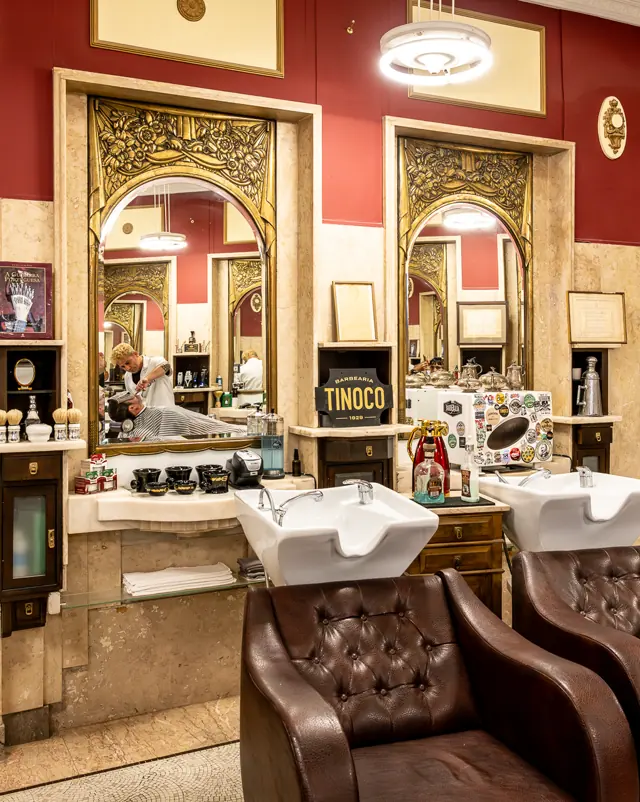
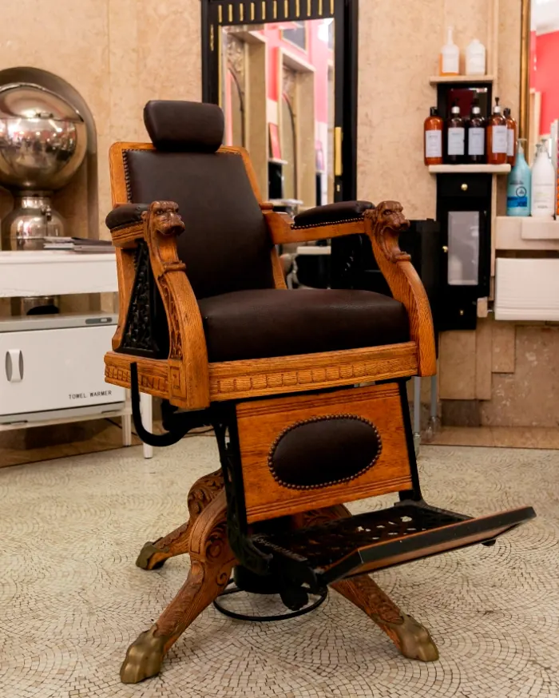
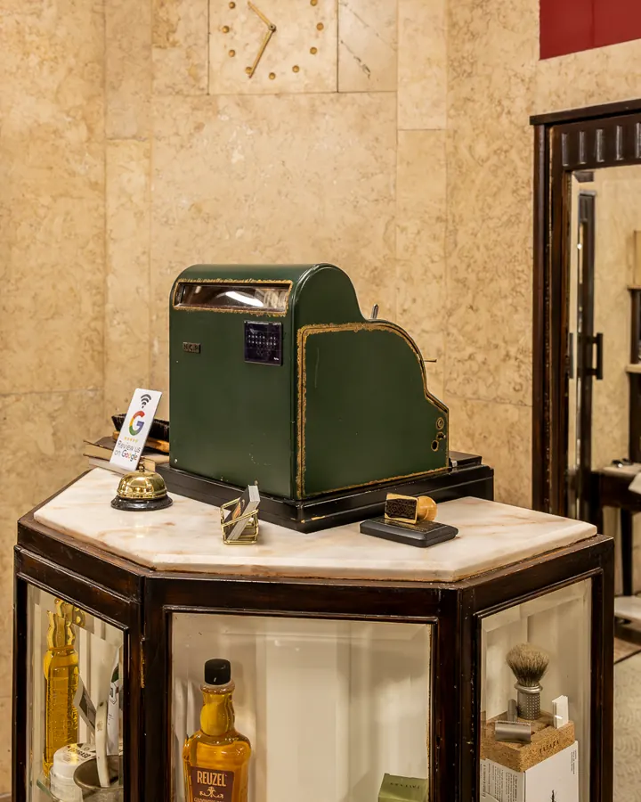
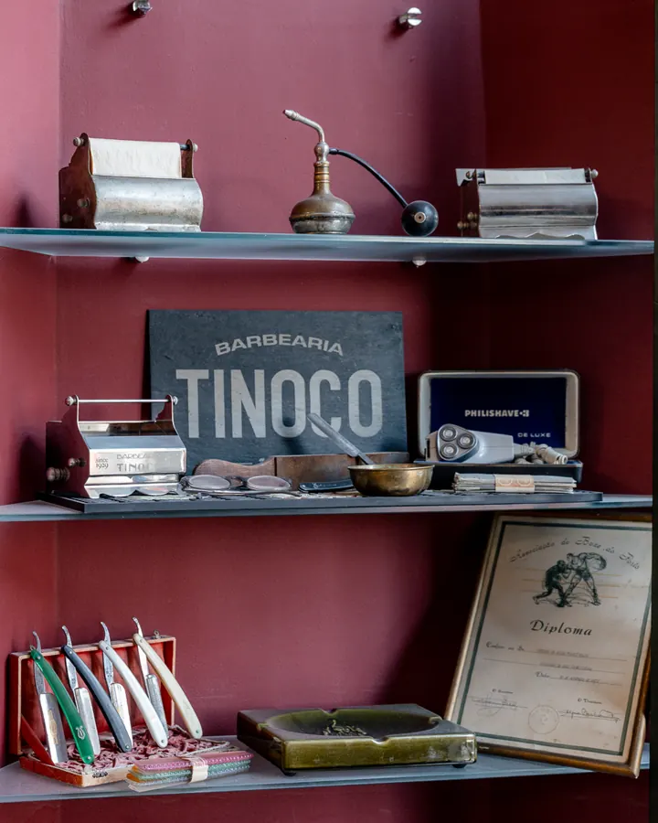
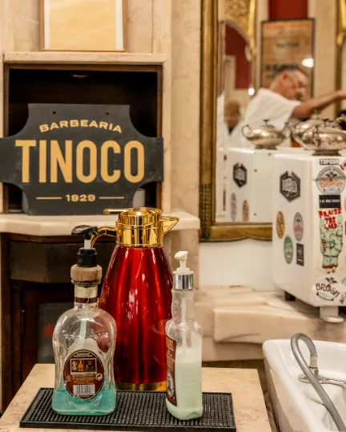
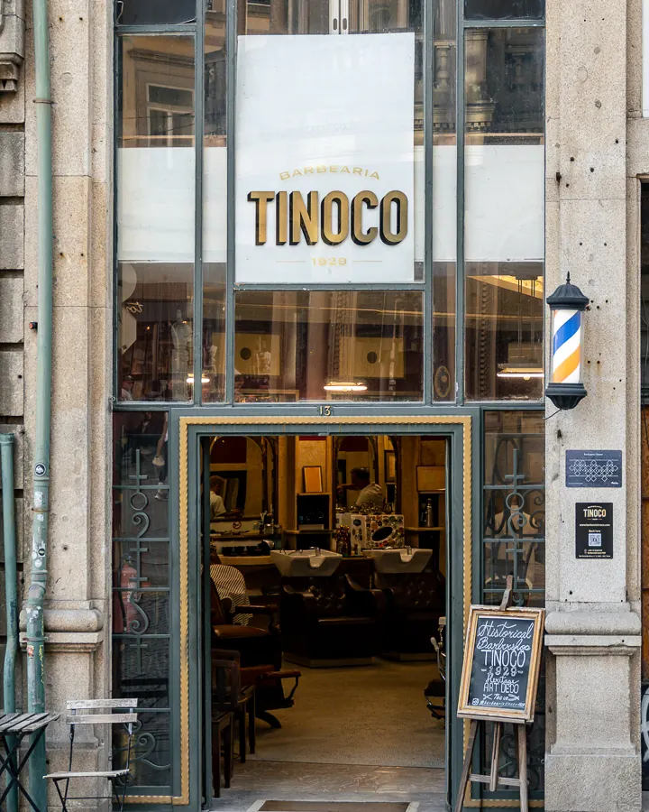

Corte e barba numa sala de 1929
Barbearia Art Déco na Rua Sá da Bandeira, na Baixa do Porto.

Corte, barba ou os dois
- Corte20 €
- Corte e barba30 €
- Barba20 €
Para homens e mulheres.
Uma sala que é património
Lavatórios de mármore, chão de mosaico em leque, cadeiras de ferro, espelhos grandes e um velho aquecedor de toalhas a vapor.





Na mesma porta desde 1929
Abriu em 1929 e já consta do almanaque de 1930. Faz parte do programa Porto de Tradição e foi das primeiras barbearias do Porto com mulheres barbeiras.
- Morada
- Rua Sá da Bandeira 13, 4000-433 Porto
- Horário
- Terça a sábado, 10h às 19h